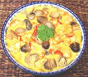

|
Shrimp with Mushrooms & GarlicThailand | ||||
| Serves: Effort: Sched: DoAhead: |
2 main ** 24 min Most |
Simple, quick and very tasty! This recipe will also serve as a side dish for Western cuisines. | |||
|
4 ----- 12 2 5 1/2 1-1/2 1/4 ------ 2 |
cl --- oz oz c T t --- T |
Garlic -- Shrimp mix Shrimp Red Chilli (1) Straw Mushrooms (2) Coconut Milk Fish Sauce (3) Black Pepper ----------- Oil |
Prep - (14 min)
|